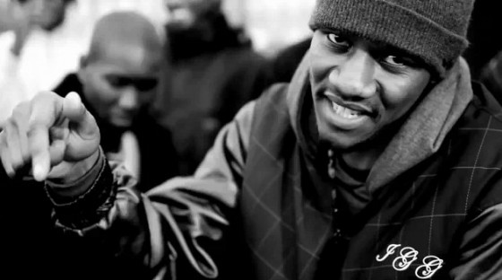
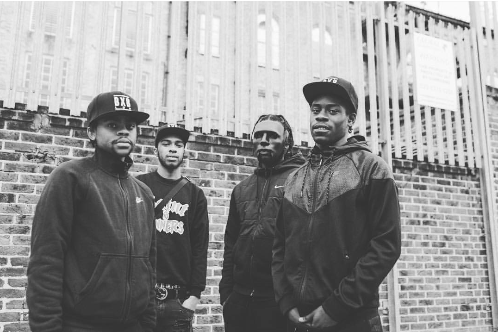

Story of the Day
The Godfather of Grime, Wiley, has recently announced on twitter that he is currently working on a joint album with Boy Better Know member, JME. This has come as a suprise to many considering that Wiley hasn't released an album since 2014 and he isn't the type to do collaboration albums. He has also announced that he is doing a solo album entitled 'Godfather' which is due to be released to the public on September 2nd 2016.

Artists of the Week
No.1 on the list for artist of the week is someone of many names, whether you know him as Hollowman, The Godfather of Rap, or the Street's Prophet, Giggs (formerly known as 'Giggler') has shown over the years that he is a force to be reckoned with in the UK rap scene. From the success of his first album, Walk In Da Park, which was released in 2006 to his most recent album entitled 'Landlord', it is clear that Giggs has grown both as a man and as an artist. Landord has done very well in the very few weeks that is has been available, especially considering that Giggs has received his well deserved praise in the form of a number 2 position in the charts. He recently also performed at the Reading Festival as well in Leeds, where he absolutely lit the stage on fire and created an atmosphere like no other artist on the line-up with his performance of hits from the album including 'Whipping Excursion' and he even joined JME on stage to perform the well-known track 'Man Don't Care'. Support his new album by downloading it on iTunes or streaming through Spotify.
No.2 on the list for artist of the week is none of other than a man known for his three personas, which are Justin Clarke, Ghetts, and Ghetto. There are many reasons why Ghetts has been placed on the list for artists of the week. From his versatile musical style to his lyrical talent, there aren't many MCs who can stand toe-to-toe with the man. Having been a witness to many of his live performances I can personally be a testimony to the fact that he really is as he thinks. Being over-confident and in denial is a reality to a lot of people, however being a mogul for the grime scene has allowed him to perfedt his craft to the point where he can bring out hit songs that get the crowd pumping but still remain true to his roots. Earlier this year, I managed to catch him at this years Eskimo Dance which took place at Building Six, O2 arena. During his performance, I saw the crowd go from shy, quiet kids on their first day of school to confident, thug-like battle-dancers who were ready to rip up the dance floor and anyone who dared to join. The moshpits on this night were A* quality and he even topped it off by bring Kano on as suprise guest, who performed songs from his new album, Made In The Manor. It just goes to show the effect that Ghetts has on his army of fans and he will definetly be known as a legend in grime if you dont think he is now.
No.3 on the list for artist of the week is 67, which has members of the group individually known as LD, Asap, Dimzy, Monkey, Liquez and SJ(currently encarcerated). For those that are new to the storm that 67 have been brewing up lately, they are known mainly for their part in the UK drill scene and many would say they started it, along with other groups like 410 and 150. From solo records that LD has delivered like Like Corn, to group hits like Take It There, 67 has created a huge buzz for themselves in the years of 2015 and 2016. They recently even released a music video for a song they did with the Godfather of Rap, Giggs and the streets were loving it. The song is called 'Lets Lurk' and this is also the title for their forthcoming album which is due to drop on September 9th 2016. Taking a look at their most recent mixtape which became available in 2015, 'In Skengs We Trust', it would be ignorant to expect anything different from their usual lyrics about street life, gunsm drugs and girls. These are the topics which has made them so popular in the drill and rap scene and the ones that their fans are most interested in, whether they can relate or not. They have come a long way and some may see this as purely due to LD as his buzz did get them known to more people and he is seen as the front-runner of 67. However, I believe that without 67 there would be no LD and vice-versa, as each member plays a significant role in building up their crew as an entity and franchise recognised by many. Stay tuned for their album 'Lets Lurk' out September 9th 2016.
Videos
Wretch 32 - Fire In The Booth (Part 3)
Chip - New Day
Giggs - Hollow & Heston (ft. Casisdead)
Young Spray - Sho Remix (ft Chip, Stefflon Don, Frisco, Devlin & Ghetts)